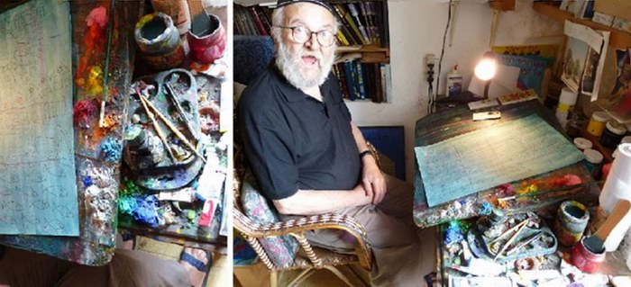
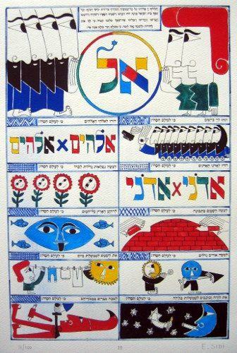

Современные художники трактуют ПАСХАЛЬНУЮ АГАДУ
Замечательный художник Пасхальной Агады - Элиягу Сиди. Его иллюстрации – сильнейшее средство выразить свое личное отношение к событиям трех тысячелетней давности, свою личную точку зрения и толкование на тексты Торы и традиции.

Известно, что традиционный тект Пасхальной Агады сложился уже к раннему средневековью и с тех пор передается из поколения в поколение как в ашкеназских, так и сефардских общинах. Начавшееся бурное ее графическое осмысление и иллюстрирование в нач.13в. по сей день не вошло в свои берега. Сегодня можно, говорить о сложившейся иконографии Пасхальной Агады...
Но, если текстовая, повествовательно-молитвенная ее часть, - продукт развития раввинистической мысли. То все, что касается ее графического оформления смело можно назать творчеством масс.
Брался утвержденный и освященный текст, сойфер делал свою работу, оставляя свободные места между отрывками текста и тогда агада передавалась заказчиком художнику. Дело было не дешевым и позволить себе такое могла только состоятельная семья. И, как говорится, кто платит, тот и заказывает музыку - нередко заказчик излагал художнику свои пожелания и предпочтения, не всегда вписывающиеся в каноническое понимание образов ...
Здесь я хочу представить вам замечательного оформителя агады, религиозного художника Элиягу Сиди из Иерусалима. Его иллюстрации – сильнейшее средство выразить свое личное отношение к событиям трех тысячелетней давности и свою личную точку зрения и толкование на тексты Торы и традиции.
ПАСХАЛЬНАЯ АГАДА ЭЛИЯhУ СИДИ ИЗ ИЕРУСАЛИМА

Четыре вопроса

Страницы в своей Агаде Сиди делит на части. Два верхних «этажа» этой страницы изображают четыре традиционных вопроса «ма ништана», ответ на вопросы младшего из членов семьи за столом седера о том, чем эта ночь отличается от всех других ночей: почему мы едим мацу, почему мы едим горькие травы, почему мы окунаем зелень в соленую воду и почему мы откидываемся на наших стульях и возлежим? Четвертое изображение показывает человека полулежащего, но не за столом седера, а в мебельном магазине по имени KISElevitz, представляющем игру слов (на иврите слово «стул» - КИСЕ. Рисунок изображающий на самом деле лежащего на кровати, а не сидящего в кресле. Иллюстрация выполнена с чувством юмора и довольно смешная, но она акцентирует одну из идей Пасхального Седера о том, что отдых является противоположностью рабства и одно из преимуществ свободы. Этот изображение - хороший пример того, как священное и банальное переплетаются в искусстве Сиди.
Халлель
Интерпретация раздела «Халлель» (Молитвы основанные на книге Псалмов)

Большинство художников Агады не создают иллюстрации для раздела «Халлель» (псалмы) в Агаде. Сиди, в отличие от них, создал иллюстрации для всего Седера, и для этого раздела. Высота поэзии Псалмов контрастирует с юмористическим подходом Сиди. Страница, приведенная выше (см. карт.) изображает элементы гимна "Славьте Бога ибо во век милость Его" (Теилим 136 (Пс. 135)).
В верхней части Сиди иллюстрирует стихи этого псалма изображениями израильтян, мужчин и женщин. Они держат круг, в котором написано слово Эль (Бог).
Этажом ниже даны иллюстрации к гимну (Пс.135:4) "Того, Который один творит чудеса великие, ибо вовек милость Его", - он изобразил цветы с улыбающимися лицами.
Для стиха (Пс.135:7) "сотворил светила великие, ибо вовек милость Его", художник изображает солнце и луну, как двух озорных детей.
Изображение женщины, развешивающей стиранное белье, сопровождает стих (Пс.135:8) "солнце - для управления днем, ибо вовек милость Его."

Таким образом Сиди в своих иллюстрациях дает юмористическое, подобно ребенку, понимание и подход к псалму, который провозглашает власть Всевышнего над космосом с одной стороны и над историей Израиля - с другой.
автор: Эфраим Калиш /TORAART/
3-х минутный сюжет о Илияhу Сиди см. здесь (пока на иврите, позже переведу на русский):